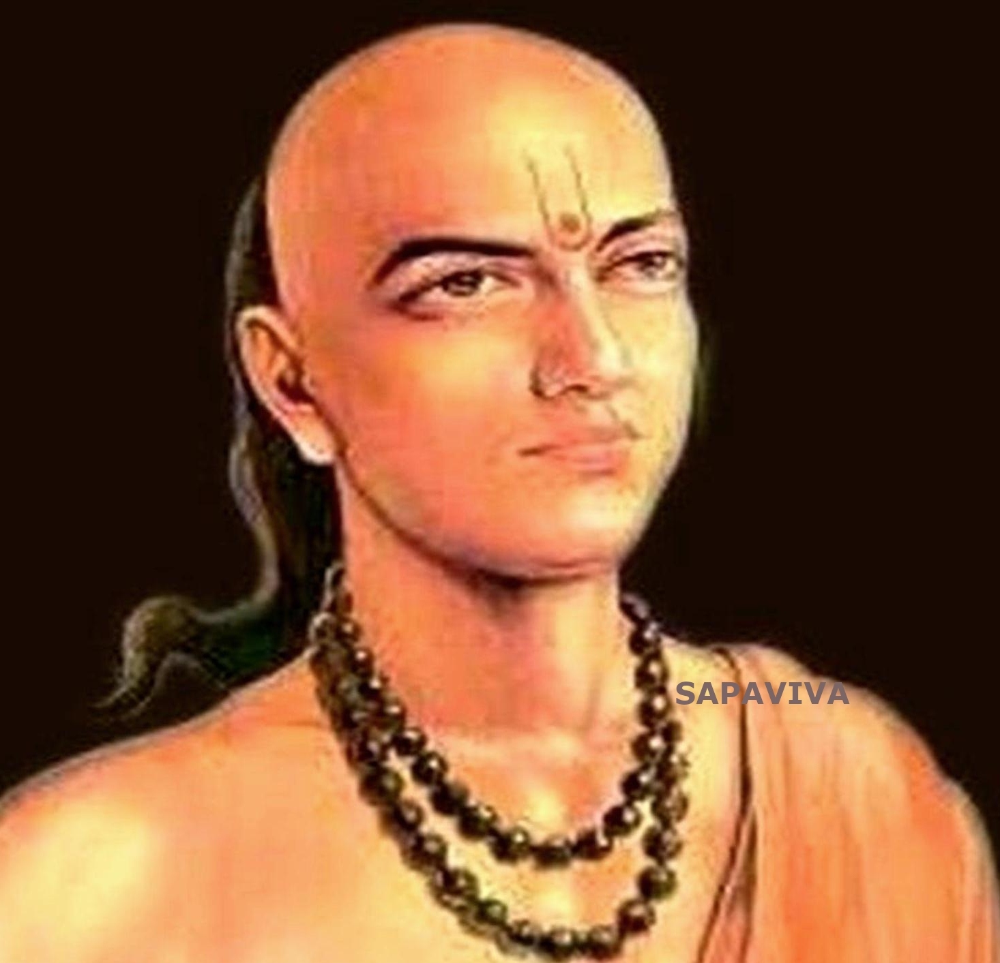

Mathematics is one of the most important subjects. Mathematics is a subject of numbers, shapes, data, measurements and also logical activities. It has a huge scope in every field of our life, such as medicine, engineering, finance, natural science, economics, etc. We are all surrounded by a mathematical world.
The concepts, theories and formulas that we learn in Maths books have huge applications in real-life. To find the solutions for various problems we need to learn the formulas and concepts. Therefore, it is important to learn this subject to understand its various applications and significance.
Assignmements
Q 1.Life of aryabhata
Answer 1:

Childhood & Early Life
Aryabhata’s birthplace is uncertain, but it may have been in the area known in ancient texts as Ashmaka, which may have been Maharashtra or Dhaka or in Kusumapura in present day Patna.
Some archaeological evidence suggests that he came from the present day Kodungallur, the historical capital city of Thiruvanchikkulam of ancient Kerala - this theory is strengthened by the several commentaries on him having come from Kerala.
He went to Kusumapura for advanced studies and lived there for some time. Both Hindu and Buddhist traditions, as well as Bhāskara I, the 7th Century mathematician, identify Kusumapura as modern Patna.
Career & Later Life
A verse mentions that Aryabhata was the head of an institution (kulapa) at Kusumapura. Since, the University of Nalanda was in Pataliputra, and had an astronomical observatory; it is probable that he was its head too.
Direct details of his work are known only from the Aryabhatiya. His disciple Bhaskara I calls it Ashmakatantra (or the treatise from the Ashmaka).
The Aryabhatiya is also occasionally referred to as Arya-shatas-aShTa (literally, Aryabhata’s 108), because there are 108 verses in the text. It also has 13 introductory verses, and is divided into four pādas or chapters.
Aryabhatiya’s first chapter, Gitikapada, with its large units of time — kalpa, manvantra, and Yuga — introduces a different cosmology. The duration of the planetary revolutions during a mahayuga is given as 4.32 million years.
Ganitapada, the second chapter of Aryabhatiya has 33 verses covering mensuration (kṣetra vyāvahāra), arithmetic and geometric progressions, gnomon or shadows (shanku-chhAyA), simple, quadratic, simultaneous, and indeterminate equations.
Aryabhatiya’s third chapter Kalakriyapada explains different units of time, a method for determining the positions of planets for a given day, and a seven-day week with names for the days of week.
The last chapter of the Aryabhatiya, Golapada describes Geometric/trigonometric aspects of the celestial sphere, features of the ecliptic, celestial equator, shape of the earth, cause of day and night, and zodiacal signs on horizon.
He did not use a symbol for zero; its knowledge was implicit in his place-value system as a place holder for the powers of ten with null coefficients.
He did not use the Brahmi numerals, and continued the Sanskritic tradition from Vedic times of using letters of the alphabet to denote numbers, expressing quantities in a mnemonic form.
He worked on the approximation for pi thus — add four to 100, multiply by eight, and then add 62,000, the circumference of a circle with a diameter of 20,000 can be approached.
It is speculated that Aryabhata used the word āsanna (approaching), to mean that not only is this an approximation, but that the value is incommensurable or irrational.
In Ganitapada, he gives the area of a triangle as: “for a triangle, the result of a perpendicular with the half-side is the area”. He discussed ‘sine’ by the name of ardha-jya or half-chord.
Like other ancient Indian mathematicians, he too was interested in finding integer solutions to Diophantine equations with the form ax + by = c; he called it the kuṭṭaka (meaning breaking into pieces) method.
His contribution to the study of Algebra is immense. In Aryabhatiya, Aryabhata provided elegant results for the summation of series of squares and cubes through well tried formulae.
His system of astronomy was called the audayaka system, in which days are reckoned from uday, dawn at lanka or “equator”. His later writings, which apparently proposed the ardha-rAtrikA, or midnight model, are lost.
He correctly believed that the earth rotates about its axis daily, and that the apparent movement of the stars is a relative motion caused by the rotation of the earth, challenging the prevailing view.
In Aryabhatiya, he writes that ‘setting and rising of planets’ is a perception similar to that of someone in a boat going forward sees an unmoving (object) going backward.
He correctly asserted that the planets shine due to the reflection of sunlight, and that the eclipses occur due to the shadows of moon and earth, and not caused by a demon called “Rahu”!
He correctly deduced that the orbits of the planets are ellipses; this is another great discovery not credited to him but to Johannes Kepler (a German astronomer, born AD 1571).
Major Works
Aryabhata’s major work, Aryabhatiya, a compendium of mathematics and astronomy, was extensively referred to in the Indian mathematical literature, and has survived to modern times. The Aryabhatiya covers arithmetic, algebra, and trigonometry.
Personal Life & Legacy
Aryabhata’s work was of great influence in the Indian astronomical tradition and influenced several neighboring cultures through translations. Some of his works are cited by Al-Khwarizmi, and in the 10th century by Al-Biruni.
The Aryabhata Knowledge University (AKU), Patna, has been established by the Government of Bihar in his honor for the development and management of educational infrastructure related to technical, medical, management and allied professional education.
India’s first satellite Aryabhata is named in his honor.
At the Aryabhata Research Institute of Observational Sciences (ARIOS) near Nainital, India, research in astronomy, astrophysics and atmospheric sciences is conducted.
Trivia
Named after the great Indian astronomer of the same name, India’s first satellite’s image used to appear on the reverse of Indian 2 rupee banknotes.
Named after the great Indian astronomer is the remnant of a lunar impact crater located in the eastern Sea of Tranquility on the Moon. Submerged by lava-flow, now only an arc-shaped ridge remains
Top 10 Facts You Did Not Know About Aryabhata
1. Aryabhata is credited to have set up an observatory at the Sun temple in Taregana, Bihar.
2. Some sources suggest that Kerala was Aryabhata's main place of life and activity but others refute this statement.
3He served as the head of an institution (kulapa) at Kusumapura and might have also been the head of the Nalanda university.
4
Some scholars claim that the Arabic text ‘Al ntf’ or ‘Al-nanf’ is a translation of one of his works.
5
His most famous text, ‘Aryabhatiya’, consists of 108 verses and 13 introductory verses.
6
Aryabhata did not use the Brahmi numerals; he used letters of the alphabet to denote numbers.
7
It is probable that he might have come to the conclusion that 'pi' is irrational.
8
He discussed the concept of ‘sine’ in his work by the name of “ardha-jya”, which literally means "half-chord".
9
Calendric calculations devised by Aryabhata are used for fixing the ‘Panchangam’ (the Hindu Calendar).
10
He correctly stated that the earth rotates about its axis daily.